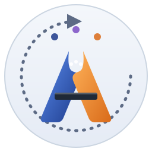
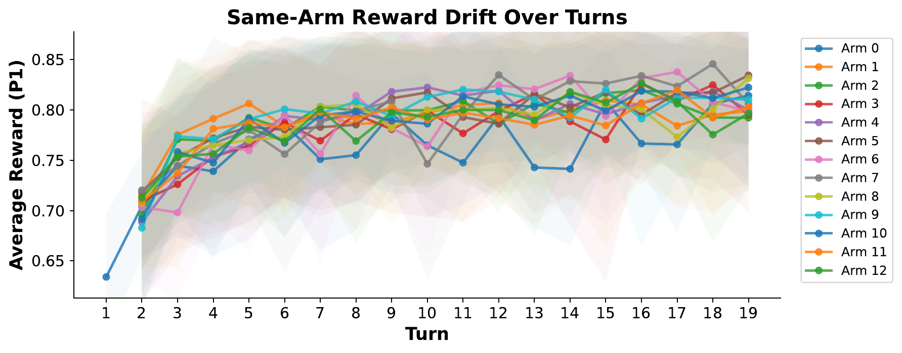
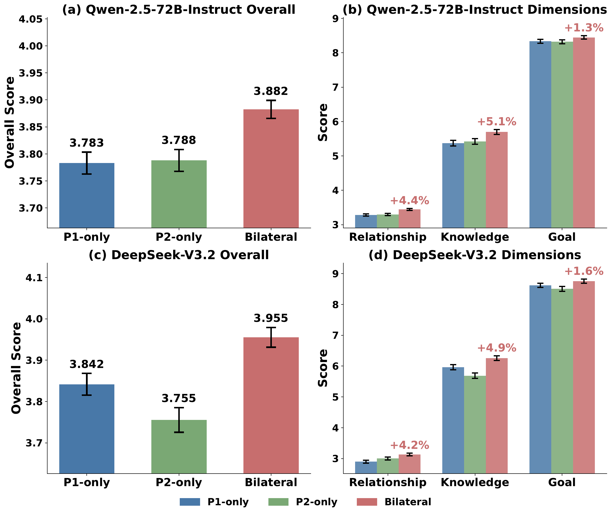
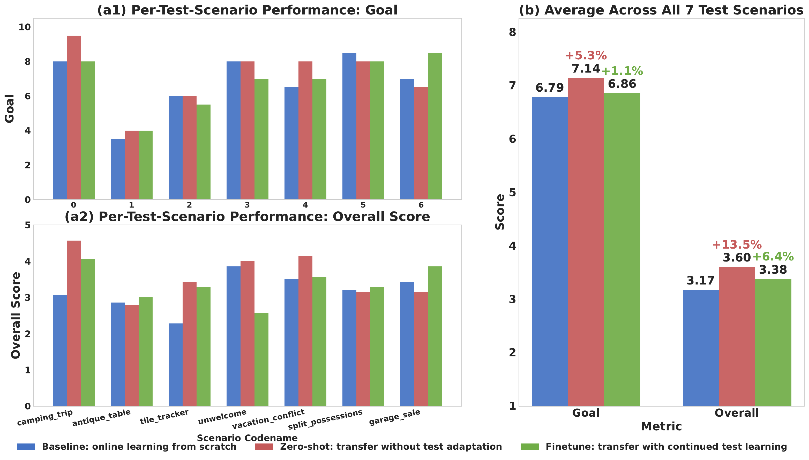
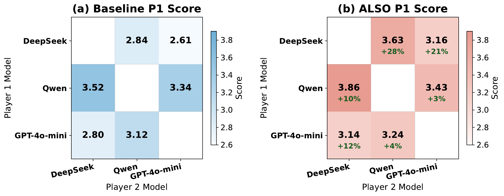
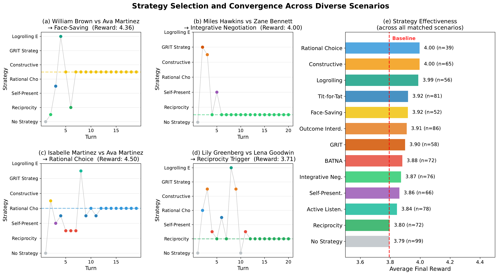
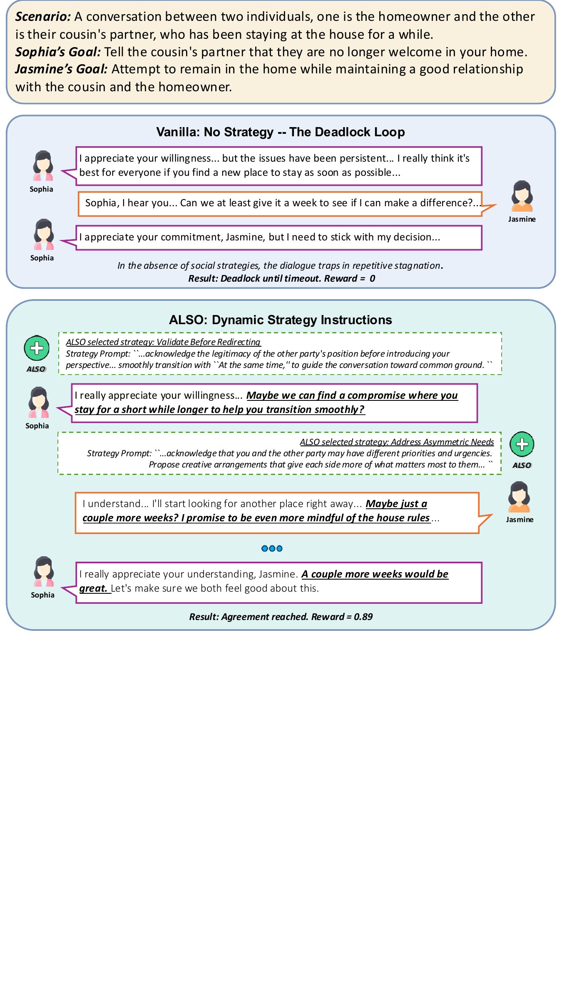

ICML 2026
Social simulation provides a compelling testbed for studying social intelligence, where agents interact through multi-turn dialogues under evolving contexts and strategically adapting opponents. Such environments are inherently non-stationary, requiring agents to dynamically adjust their strategies over time. However, most LLM-based social agents rely on static personas, while existing approaches—such as offline RL or external planners—are ill-suited to these settings, typically assuming stationarity and incurring substantial training overhead.
We propose ALSO (Adversarial onLine Strategy Optimization), the first framework for online strategy optimization in multi-agent social simulation. ALSO formulates multi-turn interaction as an adversarial bandit problem (persona × strategy as arms) and introduces a lightweight neural surrogate that predicts rewards from interaction histories, enabling sample-efficient exploration and continuous online adaptation. Experiments on the Sotopia benchmark show that ALSO consistently outperforms static baselines and existing optimization methods.
Sotopia benchmark (“Both” setting). Bold = 1st, underline = 2nd. Rel. = Relationship, Know. = Knowledge.
| Model | Method | Sotopia-All | Sotopia-Hard | ||||||
|---|---|---|---|---|---|---|---|---|---|
| Goal ↑ | Rel. ↑ | Know. ↑ | Overall ↑ | Goal ↑ | Rel. ↑ | Know. ↑ | Overall ↑ | ||
| DeepSeek-V3.2 | |||||||||
| Original | 8.207 | 2.543 | 5.279 | 3.619 | 6.521 | 1.321 | 4.371 | 3.025 | |
| Instinct | 8.507 | 2.835 | 6.092 | 3.851 | 6.921 | 2.157 | 5.443 | 3.427 | |
| OPRO | 8.173 | 2.860 | 6.082 | 3.787 | 6.807 | 2.029 | 5.350 | 3.344 | |
| EvoPrompt | 8.231 | 2.773 | 5.741 | 3.737 | 6.771 | 1.929 | 5.150 | 3.292 | |
| ALSO (Ours) | 8.501 | 2.898 | 6.137 | 3.889 | 7.114 | 2.429 | 5.471 | 3.527 | |
| Qwen2.5-72B | |||||||||
| Original | 7.991 | 2.978 | 5.434 | 3.676 | 6.841 | 2.449 | 4.928 | 3.347 | |
| Instinct | 8.437 | 3.414 | 5.511 | 3.848 | 7.386 | 3.086 | 5.286 | 3.666 | |
| OPRO | 8.182 | 2.657 | 5.490 | 3.689 | 6.707 | 1.886 | 4.629 | 3.242 | |
| EvoPrompt | 8.410 | 3.341 | 5.441 | 3.825 | 7.150 | 2.729 | 4.993 | 3.491 | |
| ALSO (Ours) | 8.447 | 3.412 | 5.698 | 3.882 | 7.452 | 3.048 | 5.384 | 3.648 | |
ALSO achieves best or near-best across all metrics on both Sotopia-All and the harder Sotopia-Hard split.

Figure 4. Strategy Reward Drift Over Dialogue Turns. Each line represents a different strategy (arm), showing how the average normalized reward varies across turns within episodes. The pronounced drift across turns directly motivates ALSO’s adversarial-bandit formulation — no strategy is universally optimal, and the best arm changes with the conversation state.
Removing or replacing one design element at a time. The neural surrogate is the most influential component; randomized exploration (EXP3) is necessary under non-stationary co-adaptation.
| Variant | Goal | Rel. | Know. | Overall |
|---|---|---|---|---|
| ALSO (full) | 7.93 | 3.07 | 6.46 | 3.91 |
| w/o EXP3 (ε-greedy) | 7.50 | 2.71 | 5.32 | 3.61 |
| w/o Score Smoothing | 7.57 | 2.25 | 5.39 | 3.57 |
| w/o Context Embedding | 7.43 | 2.64 | 4.82 | 3.51 |
| w/o Neural Surrogate | 6.89 | 2.00 | 4.93 | 3.33 |

Bilateral optimization (both agents adapt) consistently outperforms P1-only and P2-only on Qwen-2.5-72B (p<0.001) and DeepSeek-V3.2 (p<0.01); largest gains on Relationship and Knowledge.

Zero-shot transfer to 7 unseen scenarios reaches Goal 7.14 vs. 6.79 (+5.3%) and Overall 3.60 vs. 3.17 (+13.5%) over an online-from-scratch baseline — ALSO captures transferable social patterns.

ALSO yields consistent gains across all heterogeneous dyads of DeepSeek-V3.2, Qwen-2.5-72B, and GPT-4o-mini, showing a general optimization effect rather than pair-specific tuning.

(a–d) Strategy-selection trajectories for four representative scenarios: the bandit converges to scenario-specific optimal strategies — Face-Saving for relationship-sensitive negotiations, Integrative Negotiation for collaborative problem-solving, Rational Choice for analytical discussions, and Reciprocity Trigger for trust-building. (e) Average final rewards per strategy across all 450 scenarios (900 agent-strategy pairs); all social strategies beat the No-Strategy baseline (red dashed line, 3.79), with Rational Choice and Constructive Controversy the strongest (4.00).
Same scenario, two agents. Vanilla (no strategy) loops into a deadlock; ALSO injects turn-level strategies and reaches agreement.

Figure 3. Conflict Resolution. Comparison of dialogue trajectories at the critical deadlock phase (Turns 7–9), highlighting turn-level strategy switches and their effect on reward and relationship.